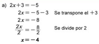
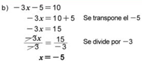
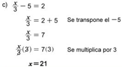

Explicación
Resuelva las siguientes ecuaciones de primer grado en una variable:
a) 2x + 3 =- 5
b) -3x - 5 = 10
c) x/3 - 5 = 2



Para resolver una ecuación de primer grado en una variable se realizan los siguientes pasos:
1. Si algún término con la variable x aparece en el lado derecho, se transpone izquierdo; si hay constantes en este se transponen al lado derecho.
2. Se reducen términos semejantes hasta convertir la ecuación a la forma ax = b o (1/a)x =
3. Si ax=b, se dividen ambos lados de la ecuacion, por a obteniendo la solución x = b/a, si (1/a)x = b, se multiplican ambos lados por a, obteniendo x = ab.